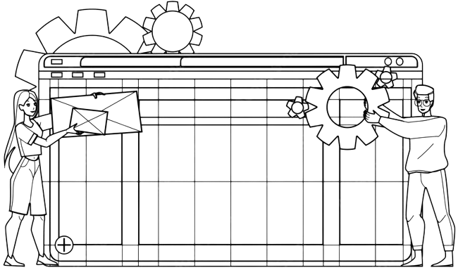

Dan Hamou
Intégrateur web
Bonjour, je suis un intégrateur web passionné. Mon objectif est de transformer des concepts créatifs en expériences numériques fluides et engageantes. Avec une expertise en HTML, CSS, JavaScript et React, je m'efforce de construire des interfaces qui sont non seulement esthétiques mais aussi fonctionnelles et accessibles à tous. Chaque projet est une nouvelle opportunité d'apprendre, de créer et de contribuer à un web plus convivial et inclusif.
A propos
Au cours de ma formation, j'explore différentes facettes du développement web pour développer une solide compréhension des technologies front-end. Mon intérêt particulier pour l'UI/UX et l'accessibilité me motive à trouver des solutions innovantes pour rendre le web plus convivial et inclusif.
Mes services
Création de Sites Front-End
Conception et développement de sites web attrayants et fonctionnels.
Utilisation de technologies telles que React, HTML, CSS, et JavaScript pour créer des interfaces utilisateur modernes.
Optimisation SEO

Analyse approfondie des mots-clés et de la concurrence pour améliorer la visibilité sur les moteurs de recherche.
Mise en œuvre de bonnes pratiques SEO telles que l'utilisation de balises HTML sémantiques, des URLs lisibles, et l'optimisation des balises meta.
Maintenance de Sites Web

Gestion régulière des mises à jour de contenu, des plugins et des thèmes pour assurer le bon fonctionnement du site.
Sauvegarde régulière des données pour prévenir toute perte accidentelle et résolution rapide des problèmes liés à la sécurité.
Mes Projets
Mes Compétences
Maîtrise du HTML/CSS
Expertise solide dans la création et la structuration de pages web en utilisant les langages HTML et CSS, assurant une présentation visuelle attrayante et une navigation fluide.
Conception adaptative (Responsive Design)
Capacité à concevoir des sites web réactifs qui offrent une expérience utilisateur optimale sur divers appareils, garantissant une accessibilité maximale.
JavaScript Interactif
Utilisation compétente de JavaScript pour ajouter des fonctionnalités interactives et dynamiques, permettant une interactivité accrue et une expérience utilisateur améliorée.
Gestion de la Compatibilité des Navigateurs
Expertise dans la résolution de problèmes de compatibilité entre navigateurs, assurant une consistance et une fonctionnalité optimale quel que soit le navigateur utilisé.